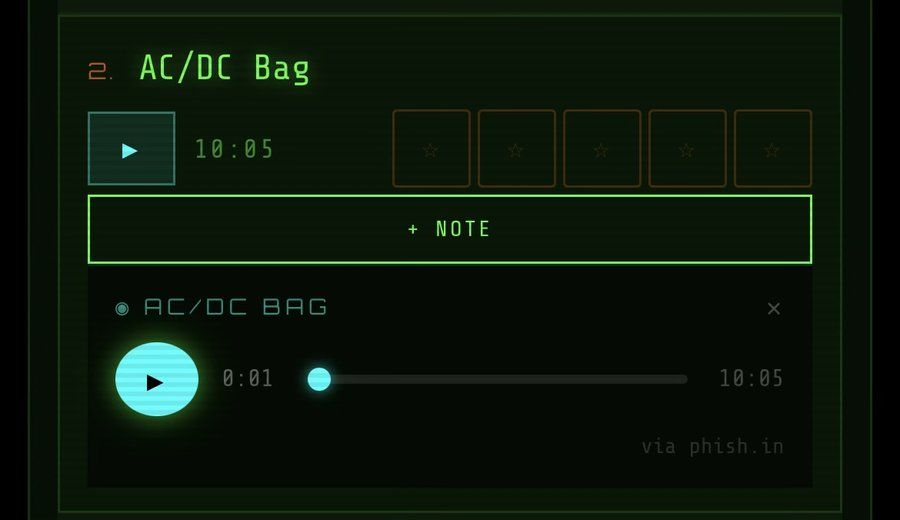
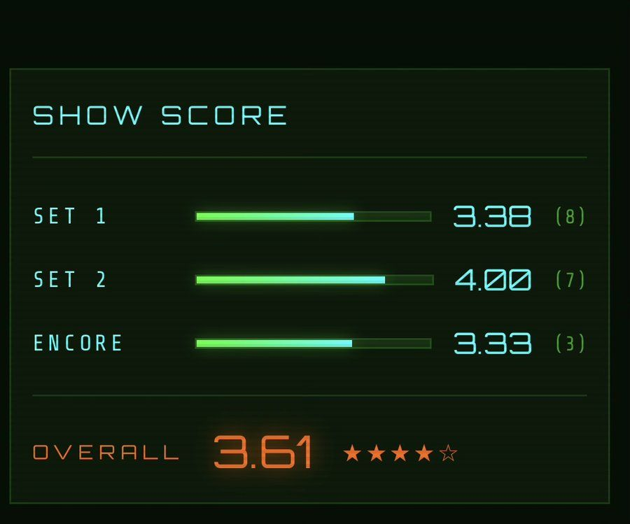

A living scorecard for the community that tracks everything. Rate shows song by song with the recording playing right there, build your lifetime archive, and watch thirty years of phandom turn into patterns.
Built by a phan, for phans — with the retro-terminal soul the music deserves.
Rate every song as it happens — from the venue, the couch webcast, or a later relisten. Stars, notes, and the full setlist at your thumb, with the Phish.in recording playing right there.

Every show gets a real score — set by set, song by song — and the jam you can't stop thinking about is one tap from playing again.

Your lifetime stats, frozen solid — every show, song counts, gaps, venues, states, eras. Your signal over time, by the numbers.
An AI concierge who knows the catalog and your history. Ask him anything — he's heard every show and he's got opinions.
A feed of phans rating in real time, Phriend Overlap to find who was at your shows, leaderboards, and community top shows, songs, and venues.
Milestones for the journey — your first rating, your fiftieth show, your streaks. Earned, never given.
Phreezer's complete next-generation interface — rebuilt screen by screen on desktop and mobile — goes solo on August 1. New archive home, deep stats, community, and a light mode. Same soul, sharper signal.
None of this exists without the community's own institutions. Phreezer is a layer on top of their incredible work — not a replacement for any of it.